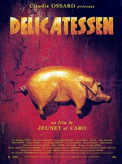

Jean-Pierre Jeunet and Marc Caro
1991
99 minutes
This is the film you always get confused with The Cook, The Thief, His Wife, and Her Lover because of a very similar spoiler element they have in common. At some point you need to re-watch them to drive the difference home, but it won't happen within these pages. The other film has Dumbledore and Helen Mirren and Tim Roth and Ian Dury in it. Before you ask, it does not have Paul Bartel or Mary Woronov in it. That's Eating Raoul. And it also does not have Randy Quaid or Mary Beth Hurt or Sandy Dennis. That's Parents. All of these would be a pretty great quadruple feature if you're feeling gluttonous.
This particular film is a bit like Amelie if Amelie had been designed for twisted-yet-whimsical Francophone leftist goth girls. Knowing your tastes, you're going to want to have this one in your back pocket. It's like if some French mobster gave Terry Gilliam a bunch of money to make a romantic comedy and then pointed a gun at him and insisted "the mime stays in the picture". Along with other classics Monsieur Hulot and Zazie Dans Le Metro, it is slam-dunk proof that the French actually do have a sense of humor.
You don't say this about very many movies, but the suicide subplot is particularly hilarious. Even the juggling gags are good.
This movie makes you count your blessings that, as many times as you've had to move in your life, you've usually had decent landlords.
Time to choose something different: